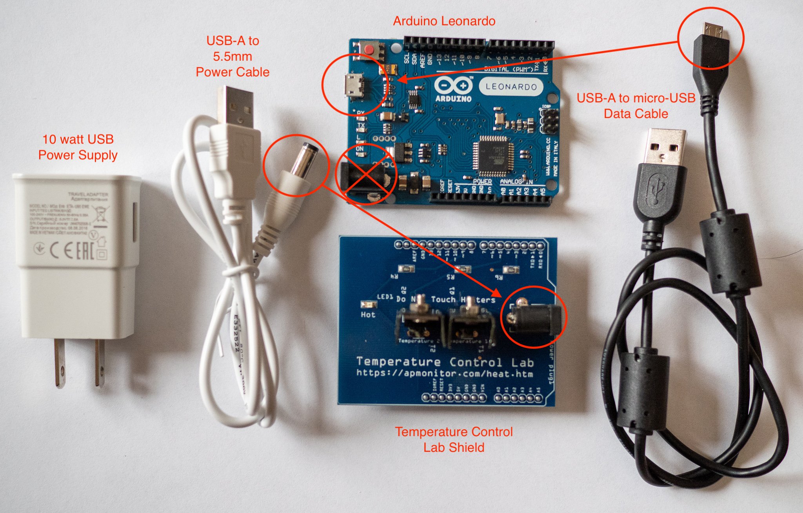
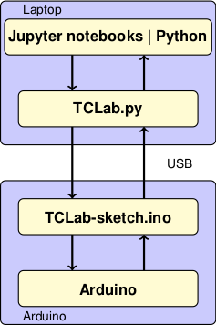

Setting up TCLab
Contents
1.1. Setting up TCLab#
1.1.1. Hardware Setup#

Insert the temperature control shield into the Arduino module. This will fit together in only one way. Squeeze the modules together until the shield is fully seated.
Connect the Arduino to your laptop with the USB data cable. You will need to USB-C to USB-A adapter if your laptop is equipped with USB-C only.
Plug the DC power adapter into a wall socket and connect the power cable to to the temperature control shield. Note: The temperature control shield requires its own power supply. There are two places where the power connector will fit. It’s important to be sure it is plugged into the shield, not the Arduino.
TCLab requires the one-time installation of custom firmware on an Arduino device. The firmware is normally preinstalled when you receive the device. But if necessary, the firmware and instructions for installation are available from the TCLab-Sketch repository.
1.1.2. Software Setup#
1.1.2.1. Requirements#
The tclab library must run locally on your laptop to access the USB port. A Python development system, such as Anaconda needs to be installed on your laptop prior to installing tclab.
1.1.2.2. How the software is organized#
Software for the Temperature Control Lab is organized as shown in the accompanying diagram. Note that the Python scripts must run on your laptop, not a remote server, in order to access the local USB port.

Jupyter notebooks and Python scripts: The top level consists of the you code you write to implement control algorithms. This may be done in Jupyter/Python notebooks or directly in Python using an interactive development environment (IDE). This repository contains many examples of code written in Jupyter/Python notebooks.
TCLab.py:
TCLab.py is contained in a Python library entitled tclab. The library includes
TCLab()class that creates an object to access to the device,clockfor synchronizing with a real time clockHistorian()class to create objects for data logging.Plotter()class to visualize data in real time.
TCLab-sketch: The TCLab-sketch repository provides firmware to ensure intrisically safe operation of the Arduino board and shield. The sketch is downloaded to the Arduino using the Arduino IDE. Loading firmware to the Arduino is a one-time operation.
Arduino: The hardware platform for the Temperature Control Laboratory. The Python tools and libraries have been tested with the Arduino Leonardo boards.
1.1.2.3. Installing the tclab library#
The tclab library is installed from a terminal window (MacOS) or command window (PC) with the command
pip install tclab
Alternatively, the installation can be performed from within a Jupyter/Python notebook with the command
!pip install tclab
Requirement already satisfied: tclab in /Users/jeff/Google Drive/GitHub/TCLab (0.4.10.dev0)
Requirement already satisfied: pyserial in /Users/jeff/opt/anaconda3/lib/python3.8/site-packages (from tclab) (3.5)
There are occasional updates to the library. These can be installed by appending a --upgrade to the above commands and demonstrated in the next cell.
!pip install tclab --upgrade
Requirement already satisfied: tclab in /Users/jeff/Google Drive/GitHub/TCLab (0.4.10.dev0)
Requirement already satisfied: pyserial in /Users/jeff/opt/anaconda3/lib/python3.8/site-packages (from tclab) (3.5)